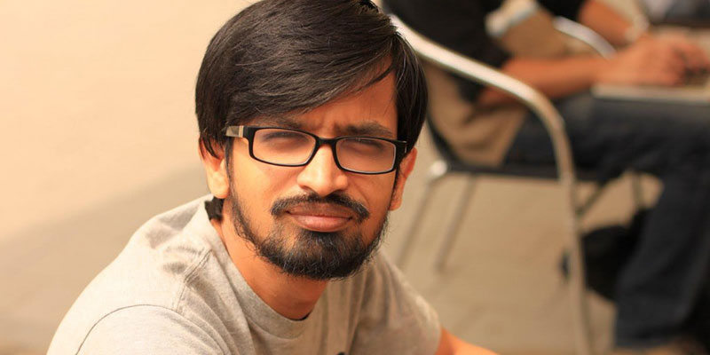

[Techie Tuesdays] Thejesh GN, activist armed with Open Data
Thejesh is a technologist with a difference who believes in changing the world with technology and activism. He is also the curator of
OpenDataCamp, which harnesses the power of publicly available data for social good.
Son of a veterinarian and a teacher, Thejesh says he would tinker with electronics in his childhood with his father also joining him. Once, father and son made a UPS using old car batteries for their house. In another instance, his father did the entire re-wiring of their house. Inspired by his father, Thejesh wanted to be an electronics engineer.

{kind=link}
Thejesh GN – Open Data Activist
Thejesh got interested in computers in his second year of engineering (electronics) when he came across microprocessors and microcontrollers and started learning C programming in his last year of engineering.
Post his engineering, Thejesh interned with Siemens after which he joined Infosys in 2003. Infosys is where his real education happened, claims Thejesh. At Infosys he worked for two years and then moved to consulting in Infosys itself. After working for seven years as a consultant, Thejesh took a sabbatical and joined
Janagraha
as the technical head of community empathy fellowship which is a part of Infosys CSR program.
Talking about how he got started with activism and open source, Thejesh has an interesting anecdote to narrate. “When I was in the first year of engineering, we were forced to make presentations in PPT. We were supposed to use Microsoft PowerPoint and that is how it all started. I started questioning the logic behind using only Microsoft software. My point was we should have the liberty to use whatever we wanted.” In 2004, Thejesh sent a petition to VTU Chancellor to encourage the usage of open source software in colleges.
Thejesh is one of the earliest technology bloggers in India. He also started the
Events Bangalore portal
around 2001 which used to list events in Bangalore. Now the blog is managed by the community.
In 2006, Thejesh started
Tweet4Blood, a portal where anyone can fill a form regarding their requirement of a particular blood group and it will automatically
post a tweet
about it to the followers thus helping you reach a wider audience.
Thejesh is a long time follower of online activism and privacy laws, He says, “I used to be a follower of
chilling effects. Nearly all the laws which get passed in the US or UK, they get passed on to India after few years, for instance Indian IT Act, it is very similar to the one which is in US. Open is for government, but for individual it is private, government has to be transparent.”
Talking about OpenDataCamp, Thejesh says, “We used to do data meets, we had a thought of platform where people can share ideas and to reduce the idea. We asked Google to give us the place and they agreed and slowly more people started coming and the movement grew, the next version of OpenDataCamp is on 15th March.”
At present, Thejesh works as a freelancer and contributes to
MySwar
which is the largest Bollywood music catalogue. It lists and suggests music based on your preferences. Thejesh also wrote the code for the initial version of
iPaidaBribe.
He is working on
AskyourGovt
which keeps a record of all the RTIs filed for public issues and the responses given by the government. He files an RTI every month for the same, and recently asked the government about
Julian Assange’s asylum plea.
Talking about how open data can help people, Thejesh says, “There are three ways to solve a problem — activism, legal and awareness. And open data can help in all three by using statistics present in the government sites most of which is free to download and use, we can present it in different ways and using visualisation and use it to solve problems. For instance Data via RTI can be used to fight legel cases to bring reforms or statistics can be shared with general pubic to build awareness”
Talking about the future, Thejesh says he is looking forward to building a political activism platform, something which acts as a middleman between the government and citizens; “something like a customer feedback system, but for governance and politics.”
Talking about the top three lessons from his journey, Thejesh says:
1. Hangout with people in different domains.
2. Be versatile. Don’t stick to one technology.
3. Look for open standard and interoperability more than open source.
Meet -Thejesh
Tell us how open source can benefit governance, especially in this election year.
Share
Aditya Bhushan Dwivedi
A Software Engineer by education, Aditya has been a Workshop Consultant with The Times of India and later on was a Cloud developer with CSC India Pvt. Ltd. Apart from coding, he has a keen interest in analyzing stock market movements and often forgets the outer world once he starts reading. You can follow him on
Google+
and Twitter at @adi_bhushan. You can reach out to him at
aditya@yourstory.com".
Latest Posts
- [Techie Tuesdays] Shubham Malhotra - From making games to tinkering with Teewe
- With $5M funding in its kitty, LocalOye aims to become the go-to local services marketplace
- [Techie Tuesdays] Bringing out the best in developers with HackerRank - Harishankaran K
- [Techie Tuesdays] 'My mission is to bring a billion people online': Rajat Bansal, CTO, Hike
- Funizen - Reviving Cyber cafes by turning them into gaming stations
SECURITY WARNING: Please treat the URL above as you would your password and do not share it with anyone. See the Facebook Help Center
for more information.
SECURITY WARNING: Please treat the URL above as you would your password and do not share it with anyone. See the Facebook Help Center
for more information.

Popular Posts
Why multi-billion dollar valuations might not all be good news for Indian startupsXiaomi rides high on India love, secures Ratan Tata's funding
Ranaram Bishnoi, the 75-year-old who stopped the march of the desert
Paytm's move into mobile commerce: A zero commission marketplace
The First Hundred: Key lessons we learned while hiring for MySmartPrice
These 23 tweeters will keep you plugged into the startup ecosystem. Follow ‘em now!
Why are Indian VCs salivating over food-tech startups?
The magnificent seven who dared to follow their passion for adventure
 Ex-Flipkart and Samsung engineers start ‘TheKarrier’, an intra-city aggregator for mini trucks
Ex-Flipkart and Samsung engineers start ‘TheKarrier’, an intra-city aggregator for mini trucksEx-army officer starts WomenCabs for women's empowerment and safety
Recommended Stories
- Why multi-billion dollar valuations might not all be good news for Indian startups
- From a street vendor to a multi crore company: How Bhavesh Bhatia turned his blindness into his strength
- Own what you grow: How the forbidden fruit empowers farmers in Uttarakhand and HP
- Why are Indian VCs salivating over food-tech startups?
- How Davangere-based Gangavathi exports is taking high quality lingerie to rural India
 SOCIALSTORY
SOCIALSTORY
- Kerala University to promote innovation in fisheries, ocean resources, agri-business and rural industries
- The efforts of firefighters are making a difference. Malaria is on decline in India – WHO
- More power to farmers in Punjab, as state government to give them full Minimum Support Price
- India urges for greater cooperation between BRICS nations on climate change
- Industry leaders discuss urban mobility at the EMBARQ conference in Delhi
About Us
| Team YS
| Contact Us
| Jobs@YS
| Testimonials
| Disclaimer
| Privacy
| Code Of Conduct
| Terms & Conditions